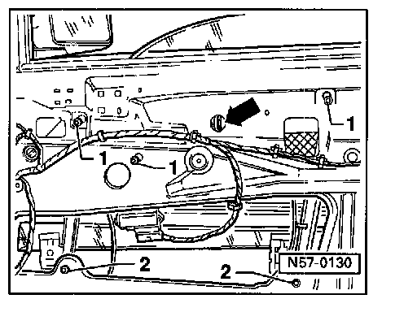

Power Window Regulator Removal
Door window regulator, removing and installing
Door window, removing
Remove cable clip (arrow).
Loosen hex-head screws 1 and 2.
Lift window regulator slightly so that hex-head screws 1 can be pulled through installation openings.
Pull window regulator out downward through installation opening.
Install in reverse order of removal.
Tightening torque (screws -2-): 10 Nm (7 ft lb)